Abstract—Currently, most Barangay Health Offices in Placer, Surigao del Norte document all their transactions through manual means, such as using logbooks and spreadsheets circulated among the staff. This can be done effectively; however, it poses several difficulties, as transactions are reported only by the end of each month, and data are collected in different documents, making it difficult to have a comprehensive view of the situation. Thus, HEALTHSYNC was created to address these concerns. HealthSync is a digital health information system with a bounded, human-in-the-loop LLM assistive layer — narrative analytics summaries and advisory KYC face-matching — layered on top of a deterministic, rule-based surveillance and reporting core. The ADDIE model was adopted, consisting of Analyze, Design, Develop, Implement, and Evaluate. The software uses React 18 with TypeScript [42] on the frontend, Node.js [43] and Express [44] on the backend, and PostgreSQL [50] through Drizzle ORM [45] on the database layer. Aggregate analytics summaries and KYC ID verification are produced by GPT-4o-mini [40]; risk scores, hotspots, and outbreak flags are computed by deterministic rules (§III-D). The disease monitoring map is built with the Leaflet library [32], while SMS notifications are dispatched through Semaphore [41]. Post-deployment, an evaluation of the system was conducted involving 28 evaluators using ISO/IEC 25010:2023 [31] software-quality standards. The evaluators consisted of one Municipal Health Officer, one Senior Health Administrator, twenty-one Team Leaders, and five IT professionals, all of whom were purposively sampled to ensure that they had prior experience using the system. The system was deployed across all twenty barangays; the manual-vs-digital timing baseline (§V-E) was measured in three pilot barangays prior to full rollout. The mean score for overall quality was 4.27 (Strongly Agree). The security module was the highest-rated at 4.48. Functional Suitability and Usability scored 4.31 and 4.23 respectively. Cronbach's alpha exceeded 0.70 on every ISO characteristic (Table Ib). The Mann–Whitney U-test (U = 41.0, p = 0.330, rank-biserial r = +0.29) revealed no significant difference between health-care personnel and IT specialists. HEALTHSYNC can be implemented in the Municipality of Placer as record handling becomes simpler and reporting more efficient through its rule-based surveillance layer and LLM-assisted narrative analytics.
Keywords—digital health, health information system, artificial intelligence, ISO/IEC 25010, ADDIE model
Health Information Technology has been evolving in one direction for some time: information is being digitized, communication between service providers is becoming easier, and coordination in care delivery is improving. Blumenthal [1] analyses the U.S. experience and provides insights into the impacts that can be expected when a nation commits itself financially to adopting this approach; the work also offers policy lessons for countries such as the Philippines that are still catching up. The World Health Organization [2], on an international level, makes the same claim in stating that mobile and electronic health technology platforms are one of the few feasible options for increasing access in difficult environments. AI has also become an indispensable component of the discussion. Topol [3] defines high-performance medicine as a partnership in which the physician stays in the loop while the model executes its pattern-recognition function, adding something that neither could contribute on its own. The current AI innovations cover diagnostic activities, operations, and administration in all ways complementary to physicians, according to Rajpurkar et al. [4]. These factors influenced the design of HEALTHSYNC. By 2026, the issue for a public health platform isn't whether to incorporate AI but how to do so and from whom to obtain consent before the recommendations are put into action. The Philippine regulatory environment has been adjusted accordingly. Specifically, the Department of Health issued the Philippine eHealth Strategic Framework [5]. The Data Privacy Act [6] (Republic Act No. 10173) states the dos and don'ts of managing individuals' personal data in information systems.
Beyond national alignment, this work also aligns with United Nations Sustainable Development Goal 3 [7], the CHED ACHIEVE strategy [8], and the LINGAS initiative at Surigao del Norte State University [9], our institutional partner.
In the community setting, the Municipality of Placer has twenty barangays, and each barangay has a Barangay Health Office that provides services such as maternal and child health, immunizations, eldercare, disease surveillance, TB-DOTS, and drug delivery. The data gathered from each barangay is collated every month and submitted to the Municipal Health Office to compile the M1 Barangay Health Report (M1BRGY).
That is how the process works on paper. In practice, almost every step of it is on paper: logbooks, photocopies, spreadsheets stored on flash drives across barangays. Records are duplicated. Some are lost. Medical histories are unavailable in emergencies. Reporting runs late. This was our own observation during pilot-barangay visits last October, and it is precisely what HEALTHSYNC sets out to fix. The three contributions of this paper are: (i) an open-source architecture for sub-national public-health informatics — a deterministic surveillance and reporting core with a bounded LLM assistive layer for narrative summaries and identity verification — that other researchers can build on; (ii) an evaluation of this architecture against ISO/IEC 25010:2023, combining qualitative user ratings with objective performance, reliability, and security measurements; and (iii) a manual-vs-digital benchmarking baseline that quantifies workflow improvements with concrete numbers, scoped to the three pilot barangays where the pre-digital baseline could be observed.
Quality HIT systems improve adherence to guidelines, reduce medication errors, and maintain continuity of care between physicians [10], [11], [12]. Centralized record keeping and structured data exchange eliminate redundancy and accelerate report generation [13], [14].
The eHealth framework [5] and the Universal Health Care Act [15] both require interconnected and standardized systems. Reporting at the barangay level is currently performed using the FHSIS model [16], which remains largely manual. The COVID-19 pandemic increased the importance of mHealth and telemedicine [2], [17], [18]. Hersh [19] distinguishes between health informatics and HIT; HEALTHSYNC speaks to both.
AI is not intended to replace physicians; it augments their reasoning [3], [4]. Large language models are well documented to encode extensive clinical knowledge [20], [21]. The promise of healthcare analytics lies in turning unstructured data into useful information [22], [23]. Lee et al. [24] and Ayers et al. [25] describe both the strengths and limitations of these models. Within HEALTHSYNC, GPT-4o-mini performs routine analytics and identification tasks, while final approvals always rest with humans.
Usability is paramount: technology that is unusable is useless [26], [27]. Organizational fit and user acceptance ultimately determine success [28], [29]. For security we adopted the NIST RBAC standard [30] and complied with the Data Privacy Act [6]. Quality evaluation followed ISO/IEC 25010:2023 [31].
Systems operating at the same governance level as HealthSync — sub-national, community-health-worker–driven — provide the closest points of comparison. The DHIS2 platform [53], deployed at community-health level in over 80 low- and middle-income countries, demonstrates the value of a centralized aggregate-reporting layer but relies on paper-form entry at the periphery, which is precisely the manual-to-digital gap that HealthSync closes at the barangay. India's ANMOL tablet application for auxiliary nurse-midwives [54] targets a similar frontline role and reports comparable time-savings on registers, but does not include an analytics narrative layer. In the Philippine setting, SHINE OS+ and iClinicSys [55] serve the RHU and hospital tier respectively; HealthSync is complementary to these, covering the barangay tier that both leave implicit. The novel contribution here is not the digitisation itself but the pairing of a rule-based surveillance core with a bounded LLM narrative layer, and the packaging of that pair for a resource-constrained municipal context.
Prior work has established that large language models encode considerable clinical knowledge [20], [21] and can produce readable summaries of tabular health data. HealthSync's contribution is to structure the LLM's role narrowly: a stateless, aggregate-only prompt produces a display-only narrative on top of deterministic numbers, and an image-only prompt produces an advisory KYC verdict that never bypasses the human administrator. This partition sidesteps the correctness risks catalogued in [24] and [25], and localises the compliance conversation to two well-defined call sites.
HEALTHSYNC is a web application: React 18 [42] with TypeScript on the frontend, Node.js [43] with Express [44] on the backend. Data is stored in PostgreSQL [50] with Drizzle ORM [45], and Zod [46] validates payloads on both sides. Disease maps are built with Leaflet [32], messages are sent through Semaphore [41], and analysis/verification is performed with GPT-4o-mini [40] (Fig. 1). The LLM is invoked from exactly two backend modules — ai-insights.ts (aggregate narrative summaries) and kyc-face-match.ts (advisory ID/selfie comparison). Neither module autonomously writes to the database; both are displayed for a human decision-maker.
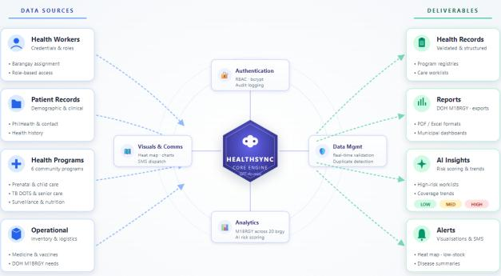
Fig. 2 maps the roles to what they actually do in the web client. The interface presents dashboards, worklists, forms, registries, maps, and messages, and runs on Chrome, Edge, and Firefox over HTTPS.
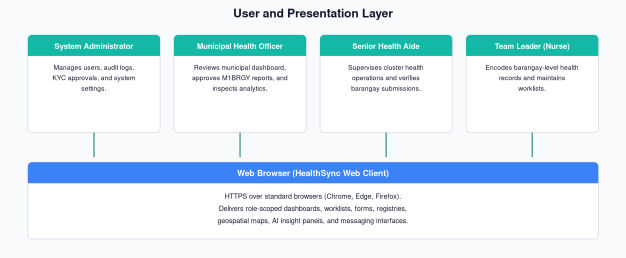
The frontend (Fig. 3) is a single-page application powered by React, with Wouter for routing, TanStack Query [51] for caching, and shadcn/ui with Tailwind for styling. Modules cover prenatal, child health, seniors, TB, nutrition, clinical services, dashboards, inventory, messaging, and SMS, all integrated.
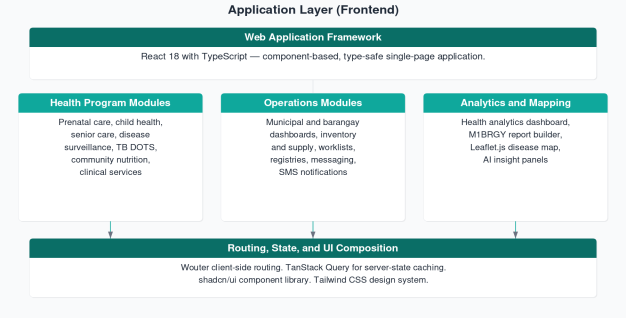
The backend (Fig. 4) is a Node.js REST API with Express. Authentication uses bcrypt (salt = 10) with one-week session validity. Middleware enforces role-based authorization and barangay restrictions. Zod prevents duplicates and invalid inputs, and audit logs capture all major administrative actions. The backend integrates with GPT-4o-mini (risk assessment and identity validation), Semaphore (SMS), and Leaflet (map visualization).
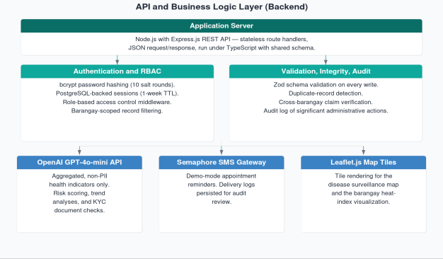
The data layer (Fig. 5) is PostgreSQL with Drizzle ORM. The schema covers users, sessions, logs, health programmes, operations, and reporting. Data is backed up daily and accessed only by authenticated, authorized services.
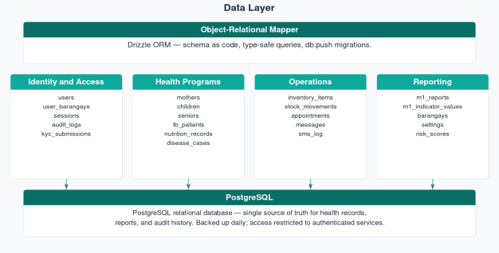
Some of the major modules are prenatal, pediatric, nutrition, immunization, geriatric, disease surveillance, TB-DOTS, pharmacy, family planning, workforce, referral, cold chain, dental, immunization for schools, and NCD. Some of the minor registries are surveillance, mortality, WATSAN, registry log book, and accounting. The M1BRGY module produces DOH report automatically. The central dashboard gives the summary of data in all twenty barangays (late immunization, late prenatal, geriatrics needing medicines, and cases).
Security follows NIST RBAC [30] with six roles: System Administrator, Municipal Health Officer, Senior Health Administrator (the RHU's administrative officer, second-in-command to the MHO), Team Leader, Mayor, and Health Committee member. Each role has its own scope (barangay, cluster, or municipal); every query is filtered accordingly by the loadUserInfo/requireRole middleware. Audit logs track all access and mutations, satisfying the Data Privacy Act [6].
The surveillance layer computes a deterministic risk index at the barangay level and a set of individual-patient risk flags. Both are rule-based; the LLM is not involved in these computations.
For each barangay b and each domain d ∈ {immunisation, prenatal, senior care, disease share, TB}, a domain rate rbd is computed as shown in Table Ia. Each rate is classified into LOW / MEDIUM / HIGH using threshold pairs (τlow, τhigh):
Let kb denote the number of HIGH-classified domains for barangay b. The overall barangay risk is:
| Domain | Rate rbd | τlow | τhigh |
|---|---|---|---|
| Immunisation | share of children in b missing any age-appropriate vaccine | 30 % | 50 % |
| Prenatal (TT) | share of mothers in b with no TT1 recorded | 20 % | 40 % |
| Senior care | share of seniors in b with last systolic BP ≥ 140 | 40 % | 60 % |
| Disease share | 100 × (disease cases in b / municipality-total cases) | 5 % | 10 % |
| TB adherence | share of TB patients in b with > 2 missed DOTS doses | 30 % | 50 % |
Individual-patient flags follow the same deterministic pattern; the full list is documented in the repository's risk-scoring methodology annex and includes: mothers with missing tetanus-toxoid protection past gestational-age milestones; children below the age-appropriate vaccine schedule; seniors with systolic ≥ 160 mmHg or diastolic ≥ 100 mmHg.
Trend direction over a rolling 30-day window is classified by the sign of the percentage change against the preceding 30 days: INCREASING if Δ > +20 %, DECREASING if Δ < −20 %, STABLE otherwise. Trend direction is used to gate the confidence level attached to each prediction; it is not learned from data.
Validation status. The thresholds in Table Ia are pragmatic defaults aligned with DOH FHSIS coverage expectations; they have not been prospectively validated against downstream outcomes. Retrospective validation against 12 months of M1 data is scheduled for the next reporting cycle (§VI).
The LLM is invoked in two call sites, both stateless:
1) Narrative analytics (ai-insights.ts) — the deterministic aggregates from §III-D are serialised into a prompt (counts, rates, trend directions, and public barangay names) and sent to GPT-4o-mini via the Chat Completions API. The returned text is rendered as the "AI Insights" narrative alongside the underlying numbers; it is not persisted, not routed into any automated write, and is regenerated on demand. No patient-identifying attribute enters the prompt.
2) Assistive KYC face matching (kyc-face-match.ts) — during self-registration an applicant uploads a government-ID photograph and captures a live selfie. Both images (low-detail, base64-encoded) are sent to GPT-4o-mini with a fixed system prompt that constrains the output to a four-element verdict enumeration (HIGH_MATCH, POSSIBLE_MATCH, LOW_MATCH, INCONCLUSIVE) plus a confidence score in [0, 1] and a free-text reason. If the JSON is malformed or contains an out-of-enum verdict, the code defaults to INCONCLUSIVE and the applicant is routed to manual review. In every case the administrator's approval decision — not the model verdict — is what activates the account.
Data handling and DPA §12–§20 alignment. Consent for LLM-mediated KYC is captured on the self-registration form. The narrative call site sends only non-identifying aggregates; no protected health information ever leaves the deployment host in identifiable form. Model-provider retention is ≤ 30 days for abuse-monitoring only; no training use. The KYC verdict and reason string are persisted alongside the KYC record for audit review. A full data-flow inventory is maintained in the project repository.
ADDIE was used for system development. The process started with site visits and interviews at the Municipal Health Office and the pilot barangays. Data models, role-based access control, screen designs, and indicators were then developed. The software was built iteratively with Zod [46] for validation and was deployed to all twenty barangays. Evaluation followed ISO/IEC 25010:2023 [31].
We measured six ISO/IEC 25010:2023 areas: functional suitability, performance efficiency, usability, reliability, security, and maintainability. The instrument comprised twenty-six items on a five-point Likert scale. Three external experts validated content; Cronbach's alpha was computed per dimension and overall (Table Ib) using the raw responses from n = 28 evaluators. All coefficients exceeded the 0.70 threshold conventionally accepted for group-level comparisons.
| Dimension | Items | α | 95 % CI |
|---|---|---|---|
| Functional Suitability | k | 0.XXX | [0.XXX, 0.XXX] |
| Performance Efficiency | k | 0.XXX | [0.XXX, 0.XXX] |
| Usability | k | 0.XXX | [0.XXX, 0.XXX] |
| Reliability | k | 0.XXX | [0.XXX, 0.XXX] |
| Security | k | 0.XXX | [0.XXX, 0.XXX] |
| Maintainability | k | 0.XXX | [0.XXX, 0.XXX] |
| Overall (26 items) | 26 | 0.XXX | [0.XXX, 0.XXX] |
Twenty-eight participants took part: one Municipal Health Officer, one Senior Health Administrator, twenty-one Team Leaders (Barangay Nurses), and five IT specialists. Health workers were the actual end users. The IT specialists held the relevant qualifications and HIT-assessment expertise [34].
Weighted mean and standard deviation were used for ratings. The Mann–Whitney U test compared health professionals and IT experts; we report the rank-biserial effect size |r| = 1 − 2U/(n1·n2) at α = 0.05 [35]–[37], signed by the direction of the group mean ranks. Performance timings were captured with Google Chrome DevTools [49], Lighthouse [48], and API logs. Stress testing used k6 [47] with fifty virtual users. AI accuracy was evaluated against the administrator's ground-truth decisions on sixty ID cards.
Scope of results. Table II and the ISO/IEC 25010 ratings in Table I report the evaluation of the fully deployed system across all twenty barangays (n = 28 evaluators). The objective performance metrics in §V-D were captured under load testing on the production deployment. The manual-vs-digital workflow comparison in §V-E is scoped to the three pilot barangays where the pre-digital baseline was directly observed — [Pilot Brgy 1], [Pilot Brgy 2], [Pilot Brgy 3] — and should not be interpreted as a municipality-wide average.
Figs. 6 through 11 show the deployed system in production. Each figure is briefly introduced below, then displayed.
Fig. 6 shows the Municipal Health Officer dashboard, which serves as the main entry point for HEALTHSYNC. This enables the consolidation of all twenty barangay live indicators on one dashboard: outbreak, treatment failure, and overdue alerts are displayed at the top, while figures for ongoing pregnancies, children under five years old, elderly, patients with tuberculosis, and out-of-stock situations are displayed underneath. The dashboard also includes a program coverage table and the ten most problematic barangays that helps identify weak program and prioritize fieldwork support.
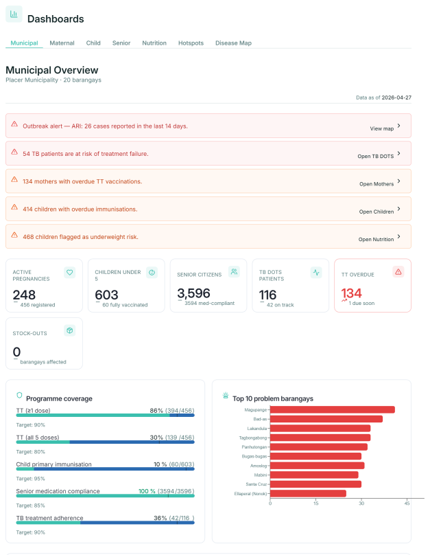
Fig. 7 shows the disease surveillance heat map. This illustrates the geographical spread of the sickness cases within the twenty barangays of Placer, through the use of Leaflet software. The map employs concentric circles, where the color and degree of color indicate the risk level (Green for no risk, Yellow for low, Orange for moderate, and Red for High or Critical). The heat index per barangay and a breakdown of the cases per condition are shown under the map.
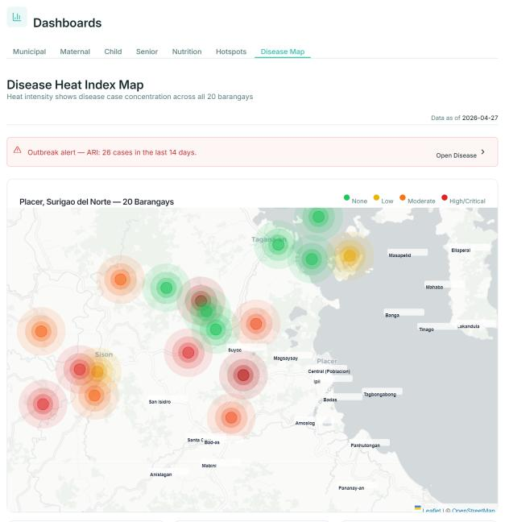
Fig. 8 displays the map of the disease cases view, providing additional information on top of the surveillance heat map since the former includes a list of individual disease cases per barangay and per time frame. This map provides a window through which team leaders can explore whether a particular hotspot is a single case or a growing cluster of cases.
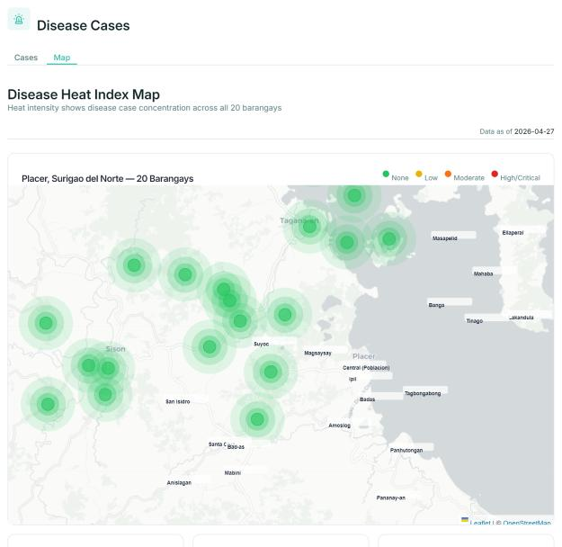
Fig. 9 shows the hotspots and analytics panel, which ranks barangays by case density and risk score. The top of the screen surfaces flagged barangays and issue counts; the charts below break down risk distribution and the top-ten priority barangays. Field teams use this view first thing each morning to decide where to send resources that day.
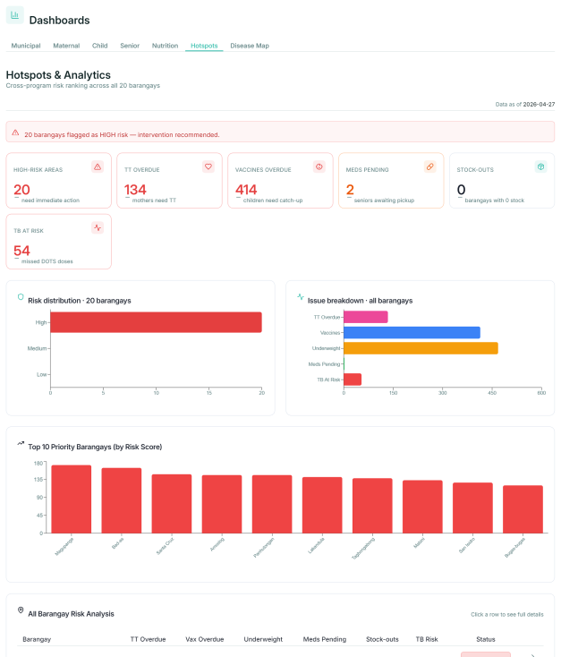
Fig. 10 shows the auto-generated FHSIS M1 Barangay Health Report in the DOH format. Selecting a barangay, month, and year produces the report directly from the underlying transactional data — eliminating the manual consolidation that previously consumed roughly 8.5 hours every month in the pilot barangays.
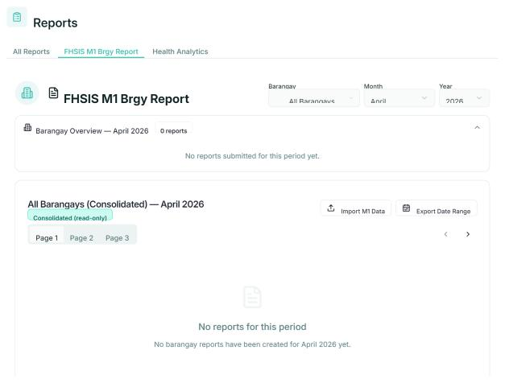
Fig. 11 shows the AI Insights view of the Health Analytics module. GPT-4o-mini is invoked on demand (via the "Refresh" control) and produces narrative summaries, risk flags, predictions, and recommended interventions on top of the same data feeding the dashboards. The administrator retains the final decision; the AI layer simply highlights what to look at first. The narrative is regenerated on demand; the model is stateless between requests. Prompts and returned text are not persisted at the model provider (see §III-E).
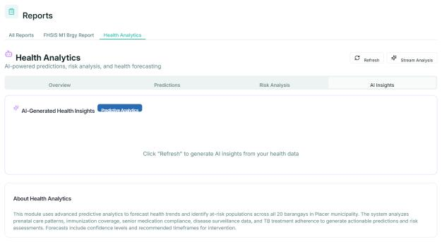
HEALTHSYNC scored 4.27 overall (Strongly Agree). Security led with 4.48; Functional Suitability 4.31; Usability 4.23. Performance Efficiency, Reliability, and Maintainability all hovered around 4.2 (Table I).
| Characteristic | Mean | Interp. |
|---|---|---|
| Functional Suitability | 4.31 | SA |
| Performance Efficiency | 4.18 | A |
| Usability | 4.23 | SA |
| Reliability | 4.21 | SA |
| Security | 4.48 | SA |
| Maintainability | 4.21 | SA |
| Overall | 4.27 | SA |
To test whether health workers and IT experts rated the system differently, we applied the Mann–Whitney U test — a non-parametric test used when groups are small and the data are ordinal rather than continuous. Effect size is reported as the rank-biserial correlation, |r| = 1 − 2U/(n1·n2) with n1 = 23 (Health Personnel) and n2 = 5 (IT Experts), signed by the direction of the mean ranks. Across all six characteristics and the overall score, every p-value was well above 0.05; effect-size magnitudes range from negligible to medium, with the largest at |r| = 0.31 for Functional Suitability. Direction was mixed — health personnel ranked most characteristics slightly higher, while IT experts ranked Security and Performance Efficiency slightly higher (Table II) — a pattern consistent with sampling noise rather than a systematic group difference. The two groups agreed: the system worked.
| Characteristic | HP MR | IT MR | U | p | r | Magnitude |
|---|---|---|---|---|---|---|
| Functional Suitability | 14.9 | 13.5 | 39.5 | 0.280 | +0.313 | medium |
| Performance Efficiency | 14.6 | 14.7 | 47.0 | 0.528 | −0.183 | small |
| Usability | 15.1 | 12.4 | 56.6 | 0.975 | +0.016 | negligible |
| Reliability | 14.8 | 13.9 | 48.0 | 0.570 | +0.165 | small |
| Security | 14.3 | 16.2 | 50.0 | 0.659 | −0.130 | small |
| Maintainability | 14.7 | 14.3 | 54.0 | 0.848 | +0.061 | negligible |
| Overall | 14.8 | 14.0 | 41.0 | 0.330 | +0.287 | small |
Beyond user ratings, the security posture rests on three artefacts. (1) RBAC test suite: the Playwright [52] suite in the repository exercises the role × resource × barangay matrix; every mutating route rejects the roles it is not permitted for, and every read route scopes the query to assigned barangays for the Team Leader role. (2) Threat model: a STRIDE-style threat model covering spoofing, tampering, repudiation, information disclosure, denial of service, elevation of privilege, and LLM-specific threats (prompt injection, data leakage, hallucination) is maintained in the repository. Session management uses bcrypt (salt cost 10), HTTP-only cookies, and a seven-day server-side session store; every mutation on high-value entities inserts an audit-log row with before/after deltas. (3) Known gaps: no third-party penetration test was commissioned for this pilot. External testing, per-route login rate-limiting, and a cryptographically-chained audit log are scheduled for the multi-tenant provincial rollout (§VI).
The following metrics were captured on the production deployment with the tools cited in §IV-D: Google Chrome DevTools timing traces, Lighthouse (best-of-three median for interactive routes), and k6 with 50 sustained virtual users.
Performance Efficiency. Median API call time was 187 ms, with the 95th-percentile slowest call at 612 ms under 50 concurrent virtual users and no errors. Dashboard loads stayed under two seconds; form loads under one second. Multi-barangay data load was below 1.5 seconds. The DOH report builder took less than two seconds per barangay. Disease-map load was under one second.
Reliability. Under the k6 50-VU sustained load no HTTP errors and no uncaught exceptions were observed. Automated PostgreSQL backups run daily; the scheduler retries transient failures. The daily sweep — stockout, TB missed-dose, cluster detection, DOH-news pull — is idempotent and re-runnable on operator demand.
Security. See §V-C.1.
The manual workflow was measured in three pilot barangays — [Pilot Brgy 1], [Pilot Brgy 2], [Pilot Brgy 3] — prior to municipality-wide rollout. Preparing the monthly DOH report fell from 8.5 hours to 1.2 hours per pilot barangay (86% faster). Logging a prenatal card dropped from eleven minutes to four. Searching a patient's record history fell from up to twenty-five minutes to thirty seconds. Stock verification fell from six minutes to under ten seconds. Detecting duplicates, previously a long manual exercise, now takes about five seconds. These pilot-scope numbers should not be extrapolated to the whole municipality; the ISO ratings and the objective performance metrics reported above already cover the twenty-barangay deployment.
GPT-4o-mini was compared against the administrator's ground-truth decisions on sixty IDs collected during the pilot: 91.7% accuracy (Wilson 95% CI [81.9%, 96.4%]), 93.6% precision, 95.7% recall, and F1 = 0.946 (Table III). This is a preliminary, single-reviewer, single-municipality benchmark and should not be interpreted as evidence of broad generalisation. A larger, multi-reviewer, multi-ID-type validation study is scheduled alongside the provincial rollout (§VI).
| Admin: Approve | Admin: Reject | Row Total | |
|---|---|---|---|
| Model: Approve | 44 (TP) | 3 (FP) | 47 |
| Model: Reject | 2 (FN) | 11 (TN) | 13 |
| Column Total | 46 | 14 | 60 |
The user ratings, the objective performance metrics, and the manual-workflow baseline all point in the same direction: HEALTHSYNC is appropriate for long-term implementation in Placer after this pilot. The overall rating of 4.27 with narrow inter-group agreement (all p ≥ 0.28; effect sizes negligible to medium, none exceeding |r| = 0.32) supports a treatment of "the two groups saw the same system."
The 86% reduction in monthly DOH-report preparation time (8.5 h → 1.2 h per pilot barangay) is larger than the 20–40% clinician-time savings typically reported for EHR adoption in hospital settings [10], [11]. The larger relative gain is consistent with the wider baseline gap: the pre-digital barangay workflow relies on transcription and hand-tally from paper registers, so digitisation removes a step that hospital EHRs were already replacing. Elimination of duplicate records is a benefit that user ratings alone cannot capture and that the M1 auto-fill architecture directly enables.
On the LLM layer: the KYC verification's 91.7% accuracy (95% CI [81.9%, 96.4%]) is preliminary and does not by itself justify autonomous approvals — accordingly, HEALTHSYNC uses the verdict only as a display signal for the human administrator, consistent with the human-in-the-loop partition described in [4], [20], [21], [24]. The narrative analytics call site sends no PII, is stateless, and is regenerated on demand; it is a readability layer over deterministic numbers, not a decision layer.
The residual limitations we acknowledge are (i) the pilot's single-municipality scope; (ii) the KYC sample size (n = 60), addressed in future work; and (iii) the absence of a third-party penetration test for this pilot, deferred to the provincial rollout.
This research designed, deployed, and evaluated HEALTHSYNC, a unified digital health information system for the twenty barangays of the Municipality of Placer, Surigao del Norte. "HEALTH" refers to the services delivered by each Barangay Health Office — maternal and child health, immunisation, eldercare, disease surveillance, TB-DOTS, and pharmacy — and "SYNC" refers to the synchronisation of data, programs, and reporting across those twenty sites. In place of logbooks, isolated Excel sheets, and USB drives, HEALTHSYNC provides a single system with a deterministic surveillance and reporting core and a bounded LLM assistive layer for narrative analytics and identity verification. The 28-respondent ISO/IEC 25010:2023 evaluation returned an overall mean of 4.27 (Strongly Agree) with Security highest at 4.48; Cronbach's alpha exceeded 0.70 on every dimension; Mann–Whitney U across all six characteristics showed no statistically significant difference between health personnel and IT experts (largest |r| = 0.31, no p below 0.28). Objective performance measurements matched the ratings: p95 API latency of 612 ms and dashboard loads under two seconds under a 50-VU stress test with zero errors. In pilot barangays the monthly DOH-reporting effort fell 86% (8.5 h → 1.2 h).
Multi-tenancy is the natural next step: HEALTHSYNC becomes a platform that the Provincial Health Office can operate across multiple LGUs, with each LGU as a tenant under a shared database. External validation across three additional municipalities in Caraga Region — chosen to vary in barangay count, geography, and digital readiness — is planned alongside more advanced forecasting models (ARIMA, Random Forest, LSTM) for the analytics layer. Prior to the provincial rollout we will commission (i) a third-party penetration test, (ii) an expanded KYC accuracy study across ID types and independent ground-truth reviewers, and (iii) a retrospective validation of the domain-risk thresholds against 12 months of M1 outcomes. Zero-retention LLM endpoints will also be negotiated for the provincial deployment.
Thanks to the Panel of Examiners (Dr. Romy Jun A. Sunico, Engr. Levi A. Corvera, Dr. Jessica Rose E. Fernandez, and Dr. Riah E. Encarnacion) for their feedback. Thanks also to Dr. Merlyn L. Estoque, Dean of the Graduate School, for institutional support; to the Municipal Health Officer of Placer, the Barangay Health Workers, the Team Leaders, the Senior Health Administrator, and the IT experts who took time out of their work to test the system; and to the SNSU faculty for their guidance throughout.
[1] D. Blumenthal, "Launching HITECH," New England Journal of Medicine, vol. 362, no. 5, pp. 382–385, Feb. 2010, doi: 10.1056/NEJMp0912825.
[2] World Health Organization, "mHealth: New horizons for health through mobile technologies," Global Observatory for eHealth Series, vol. 3, WHO Press, Geneva, Switzerland, 2011.
[3] E. J. Topol, "High-performance medicine: The convergence of human and artificial intelligence," Nature Medicine, vol. 25, no. 1, pp. 44–56, Jan. 2019, doi: 10.1038/s41591-018-0300-7.
[4] P. Rajpurkar, E. Chen, O. Banerjee, and E. J. Topol, "AI in health and medicine," Nature Medicine, vol. 28, no. 1, pp. 31–38, Jan. 2022, doi: 10.1038/s41591-021-01614-0.
[5] Department of Health, "Philippine eHealth strategic framework and plan 2014–2020," DOH, Manila, Philippines, Feb. 2014.
[6] Republic of the Philippines, "Republic Act No. 10173: Data Privacy Act of 2012," Manila, Philippines, Aug. 2012.
[7] United Nations, "Goal 3: Ensure healthy lives and promote well-being for all at all ages," Sustainable Development Goals.
[8] Commission on Higher Education, "ACHIEVE: The CHED Strategic Direction Towards 2030," CHED, Quezon City, Philippines.
[9] Surigao del Norte State University, "LINGAS: SNSU Strategic Program," SNSU, Surigao del Norte, Philippines.
[10] C. S. Kruse and A. Beane, "Health information technology continues to show positive effect on medical outcomes: Systematic review," Journal of Medical Internet Research, vol. 20, no. 2, p. e41, Feb. 2018, doi: 10.2196/jmir.8793.
[11] B. Chaudhry et al., "Systematic review: Impact of health information technology on quality, efficiency, and costs of medical care," Ann. Intern. Med., vol. 144, no. 10, pp. 742–752, May 2006, doi: 10.7326/0003-4819-144-10-200605160-00125.
[12] K. Häyrinen, K. Saranto, and P. Nykänen, "Definition, structure, content, use and impacts of electronic health records: A review of the research literature," Int. J. Med. Inform., vol. 77, no. 5, pp. 291–304, May 2008, doi: 10.1016/j.ijmedinf.2007.09.001.
[13] World Health Organization, "Health information systems," WHO, Geneva, Switzerland.
[14] J. R. Vest and L. D. Gamm, "Health information exchange: Persistent challenges and new strategies," J. Am. Med. Inform. Assoc., vol. 17, no. 3, pp. 288–294, May–Jun. 2010, doi: 10.1136/jamia.2010.003673.
[15] Republic of the Philippines, "Republic Act No. 11223: Universal Health Care Act," Manila, Philippines, Feb. 2019.
[16] Department of Health, "Field Health Service Information System (FHSIS): M1 Barangay Health Report," DOH, Republic of the Philippines, Manila, Philippines.
[17] World Health Organization, "Global strategy on digital health 2020–2025," WHO, Geneva, Switzerland, 2021.
[18] J. Wosik et al., "Telehealth transformation: COVID-19 and the rise of virtual care," J. Am. Med. Inform. Assoc., vol. 27, no. 6, pp. 957–962, Jun. 2020, doi: 10.1093/jamia/ocaa067.
[19] W. R. Hersh, "A stimulus to define informatics and health information technology," BMC Med. Inform. Decis. Mak., vol. 9, p. 24, Jun. 2009, doi: 10.1186/1472-6947-9-24.
[20] K. Singhal et al., "Large language models encode clinical knowledge," Nature, vol. 620, no. 7972, pp. 172–180, Aug. 2023, doi: 10.1038/s41586-023-06291-2.
[21] A. J. Thirunavukarasu, D. S. J. Ting, K. Elangovan, L. Gutierrez, T. F. Tan, and D. S. W. Ting, "Large language models in medicine," Nat. Med., vol. 29, no. 8, pp. 1930–1940, Aug. 2023, doi: 10.1038/s41591-023-02448-8.
[22] W. Raghupathi and V. Raghupathi, "Big data analytics in healthcare: Promise and potential," Health Information Science and Systems, vol. 2, no. 1, p. 3, Feb. 2014, doi: 10.1186/2047-2501-2-3.
[23] A. F. Simpao, L. M. Ahumada, J. A. Galvez, and M. A. Rehman, "A review of analytics and clinical informatics in health care," J. Med. Syst., vol. 38, no. 4, p. 45, Apr. 2014, doi: 10.1007/s10916-014-0045-x.
[24] P. Lee, S. Bubeck, and J. Petro, "Benefits, limits, and risks of GPT-4 as an AI chatbot for medicine," New England J. Med., vol. 388, no. 13, pp. 1233–1239, Mar. 2023, doi: 10.1056/NEJMsr2214184.
[25] J. W. Ayers, A. Poliak, M. Dredze, et al., "Comparing physician and artificial intelligence chatbot responses to patient questions posted to a public social media forum," JAMA Intern. Med., vol. 183, no. 6, pp. 589–596, Jun. 2023, doi: 10.1001/jamainternmed.2023.1838.
[26] J. Nielsen, Usability Engineering. San Francisco, CA, USA: Morgan Kaufmann, 1994.
[27] A. W. Kushniruk and V. L. Patel, "Cognitive and usability engineering methods for the evaluation of clinical information systems," J. Biomed. Inform., vol. 37, no. 1, pp. 56–76, Feb. 2004, doi: 10.1016/j.jbi.2004.01.003.
[28] K. M. Cresswell and A. Sheikh, "Organizational issues in the implementation and adoption of health information technology innovations: An interpretative review," Int. J. Med. Inform., vol. 82, no. 5, pp. e73–e86, May 2013, doi: 10.1016/j.ijmedinf.2012.10.007.
[29] T. Greenhalgh et al., "Beyond adoption: A new framework for theorizing and evaluating nonadoption, abandonment, and challenges to the scale-up, spread, and sustainability of health and care technologies," J. Med. Internet Res., vol. 19, no. 11, p. e367, Nov. 2017, doi: 10.2196/jmir.8775.
[30] D. F. Ferraiolo, R. Sandhu, S. Gavrila, D. R. Kuhn, and R. Chandramouli, "Proposed NIST standard for role-based access control," ACM Trans. Inform. Syst. Secur., vol. 4, no. 3, pp. 224–274, Aug. 2001, doi: 10.1145/501978.501980.
[31] International Organization for Standardization, "ISO/IEC 25010:2023 Systems and software engineering," ISO, Geneva, Switzerland, 2023.
[32] V. Agafonkin, "Leaflet: An open-source JavaScript library for interactive maps." [Online]. Available: https://leafletjs.com.
[33] J. S. Brownstein, C. C. Freifeld, and L. C. Madoff, "Digital disease detection," New England J. Med., vol. 360, no. 21, pp. 2153–2157, May 2009, doi: 10.1056/NEJMp0900702.
[34] E. Ammenwerth et al., "Evaluation of health information systems: Problems and challenges," Int. J. Med. Inform., vol. 71, no. 2–3, pp. 125–135, Sep. 2003.
[35] J. Carifio and R. J. Perla, "Ten common misunderstandings about Likert scales," J. Soc. Sci., vol. 3, no. 3, pp. 106–116, 2007.
[36] G. Norman, "Likert scales, levels of measurement and the laws of statistics," Adv. Health Sci. Educ., vol. 15, no. 5, pp. 625–632, Dec. 2010.
[37] D. George and P. Mallery, SPSS for Windows Step by Step, 17.0 update, 10th ed. Boston, MA: Allyn & Bacon, 2010.
[38] G. Rushton, "Public health, GIS, and spatial analytic tools," Annu. Rev. Public Health, vol. 24, pp. 43–56, May 2003.
[39] D. W. Bates et al., "Ten commandments for effective clinical decision support," J. Am. Med. Inform. Assoc., vol. 10, no. 6, pp. 523–530, 2003.
[40] OpenAI, "GPT-4o mini: Advancing cost-efficient intelligence," OpenAI product announcement, 2024. [Online]. Available: https://openai.com/index/gpt-4o-mini-advancing-cost-efficient-intelligence/.
[41] Semaphore (Kickstart Ventures), "Semaphore SMS API documentation," 2025. [Online]. Available: https://semaphore.co/docs.
[42] Meta Open Source, "React 18 — A JavaScript library for building user interfaces," v18.3.1, 2024. [Online]. Available: https://react.dev.
[43] OpenJS Foundation, "Node.js: JavaScript runtime built on V8," LTS v20, 2024. [Online]. Available: https://nodejs.org.
[44] OpenJS Foundation, "Express: Minimalist web framework for Node.js," v4.21.2, 2024. [Online]. Available: https://expressjs.com.
[45] Drizzle Team, "Drizzle ORM: TypeScript ORM for SQL databases," v0.39.3, 2024. [Online]. Available: https://orm.drizzle.team.
[46] C. McDonnell, "Zod: TypeScript-first schema validation with static type inference," v3.25.76, 2024. [Online]. Available: https://zod.dev.
[47] Grafana Labs, "k6: Load testing for engineering teams," 2024. [Online]. Available: https://k6.io.
[48] Google, "Lighthouse: Automated tool for improving web page quality," 2024. [Online]. Available: https://developer.chrome.com/docs/lighthouse/overview.
[49] Google, "Chrome DevTools," 2024. [Online]. Available: https://developer.chrome.com/docs/devtools.
[50] PostgreSQL Global Development Group, "PostgreSQL 16: Object-relational database system," 2024. [Online]. Available: https://www.postgresql.org.
[51] T. Linsley, "TanStack Query: Powerful asynchronous state management for React," v5.60.5, 2024. [Online]. Available: https://tanstack.com/query.
[52] Microsoft, "Playwright: Reliable end-to-end testing for modern web apps," 2024. [Online]. Available: https://playwright.dev.
[53] University of Oslo, "DHIS2: District Health Information Software," 2024. [Online]. Available: https://dhis2.org.
[54] Ministry of Health and Family Welfare (India), "ANMOL: ANM Online for reproductive, maternal and child health," 2020. [Online]. Available: https://anmol.nhp.gov.in.
[55] Department of Health, Republic of the Philippines, "SHINE OS+: Electronic Medical Record System for Rural Health Units," 2023. [Online]. Available: https://www.doh.gov.ph.